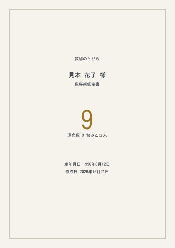
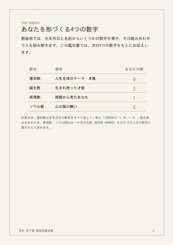
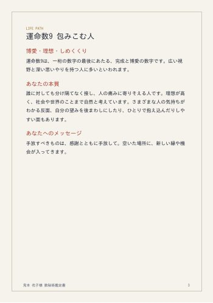
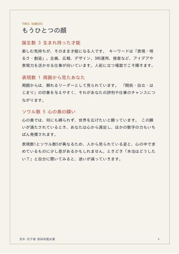
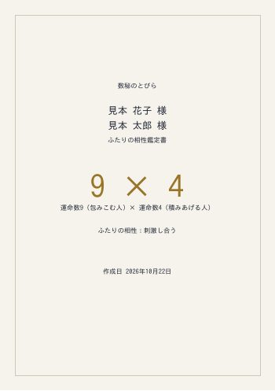
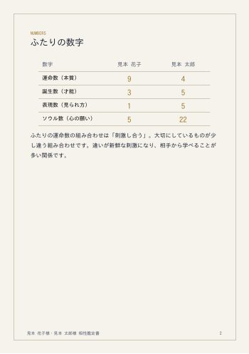
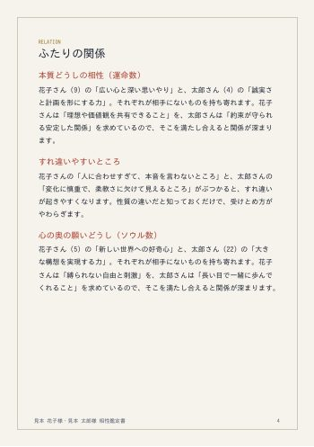

生まれた日の数字が、
あなたの扉をひらく。
生年月日を入れるだけ。数秘術で導く「運命数」から、あなたの本質と、2026年の流れを読み解きます。登録不要・無料。
運命数
あなたの本質
強みが活きる場面
気をつけたいこと
詳しい鑑定書（PDF・約11ページ）
無料診断の先にある、あなただけの読み解きをお届けします。




見本（架空の人物で作成）。実際はあなたの生年月日とお名前で作成します。
- 運命数・誕生数・表現数・ソウル数の4つの数字からみる性格の全体像
- 恋愛・結婚で惹かれやすい相手と、相性のよい数字
- 向いている働き方とお金の流れ
- 2026年〜2027年の月ごとの運気カレンダー
1,980円 （税込）
鑑定書を申し込む（準備中）
ただいま決済方法を切り替えています。再開まで少しお待ちください。
ふたりの相性鑑定書（PDF・約8ページ）
恋人・夫婦・友人・仕事仲間。おふたりの生年月日とお名前から、関係のよいところ、すれ違いやすいところ、うまくいくコツを読み解きます。



2,980円 （税込）
相性鑑定書を申し込む
STORESのショップでお申し込みいただけます。備考欄におふたりの生年月日とお名前のローマ字をご記入ください。
数秘術とは
生年月日や名前を数字に置きかえ、その人が持つ性質や人生の流れを読む占術です。古代ギリシャの数学者ピタゴラスの考え方がもとになったといわれています。
運命数の出し方
生年月日の数字をすべて一桁ずつ足し、一桁になるまで足し続けます。途中で11・22・33になった場合は「マスターナンバー」としてそのまま扱います。
個人年数
誕生月と誕生日に、今年の西暦を足して一桁にした数字です。9年でひとめぐりする、あなた自身の一年のテーマを表します。